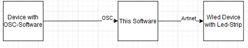

Welcome to the WELOSA documentation
NOTE
This documentaion and software is still under heavy development.
About
Controll your WLED-Device via Artnet and Open Sound Control You can use the software to send data via Artnet to your device. Additionally you can controll the Software via OSC. Examples are provided.

Getting Started
Dependencies
- openFrameworks
- Visual Studio 2017 or 2019
- Some kind of Micro-Controller (Esp8226, etc) running WLED
Setup (Software)
- Download openFrameworks and set it up
- Clone the following addons to your addon folder
git clone https://github.com/paulvollmer/ofxCsv.git
git clone https://github.com/hiroyuki/ofxArtnet.git
- Then clone this repo and use the project-generator to generate the project. Dont forget to select the two addons from above.
- Create the file "node.csv" file in /bin/data in your project-folder
- Use the following schema for the csv-file to add your devices.
"deviceName,IP,ledCount"
LedWall,192.168.188.9,60
Setup (Hardware)
- go to the WLED devices webinterface, then to settings/sync and use following settings
Type: Art-net
Multicast: FALSE
Start universe: 0
Skip out-of-sequence packets: TRUE
DMX start address: 0
DMX mode: Multi RGB
OSC Paramters
- use following ports:
Input : 6666
Output: 6667 - list of adresses (incomplete!)
| Control | OSC-Adress | DataType | Range |
|---|---|---|---|
| Color-Red: | left-aligned | float | 0-255 |
| Color-Red: | centered | float | 0-255 |
| Color-Red: | right-aligned | float | 0-255 |
| Color-Brightness | right-aligned | float | 0-255 |
Troubleshoot
Contact
📧: nnsbndDEV@gmail.com
License
Acknowledgments
- A huge thanks to these awesome projects !
- ofArtnet
- ofCsv
- openFrameworks
Future development
- Audio-Visual Effects
- Effect browser for custom effects
- Linux support(almost there 🥳)